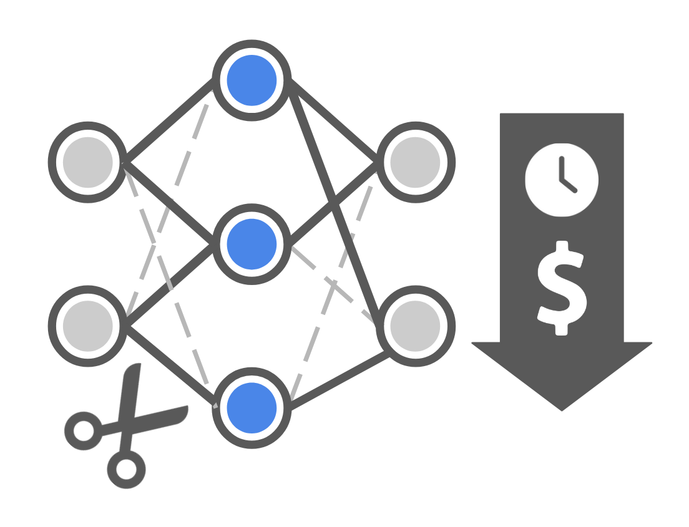
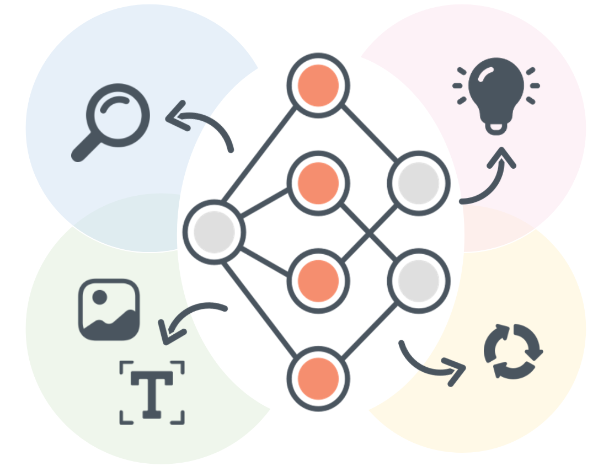

Research Focus

Optimization for
Model Compression
As modern AI models, particularly deep neural networks, grow increasingly large and computationally demanding, model compression has become essential for enabling broader and more sustainable use of AI technologies.
We develop optimization methods to compress large models so that they can run more efficiently at training and inference without significantly compromising their performance.

Optimization for
Deep Learning
Optimization has been central to the success of deep learning, yet there remain many challenges to address such as non-convexity, high dimensionality, and scalability.
We study both theoretical foundations—such as convergence guarantees and generalization properties—and practical algorithms, including stochastic, adaptive, and second-order methods, so as to come up with efficient and principled optimization methods.

Optimization for
Collaborative Learning
Collaborative machine learning is a promising learning paradigm that allows participants to work together to train a model without necessarily sharing their raw data.
However, frequent exchange of updates can overwhelm networks, especially with large models or slow connections.
We address such a unique set of challenges due to its distributed and often decentralized nature by developing efficient and scalable solutions.

Optimization for
Other Applications
Optimization is a versatile tool that can be applied to a wide range of machine learning applications.
We are currently focused on addressing challenges surrounding large language models, particularly those involving learning in black-box environments, continual adaptation, and multi-modal contexts.
Publications
Kwanhee Lee, Hyeondo Jang, Dongyeop Lee, Dan Alistarh, Namhoon Lee
ICLR 2026
Jin Seong*, Jiyun Park*, Wencke Liermann, Hongseok Choi, Yoonji Nam, Hyun Kim, Soojong Lim, Namhoon Lee
NeurIPS 2025
Seonghwan Park, Jueun Mun, Donghyun Oh, Namhoon Lee
NeurIPS 2025
Sungbin Shin*, Dongyeop Lee*, Maksym Andriushchenko, Namhoon Lee
UAI 2025; ICML 2023 Workshop on High-dimensional Learning Dynamics
Dongyeop Lee, Kwanhee Lee, Jinseok Chung, Namhoon Lee
ICML 2025 (Spotlight)
Dahun Shin*, Dongyeop Lee*, Jinseok Chung, Namhoon Lee
ICML 2025
Seonghwan Park, Jaehyeon Jeong, Yongjun Kim, Jaeho Lee, Namhoon Lee
ICLR 2025
Sungbin Shin, Wonpyo Park, Jaeho Lee, Namhoon Lee
EMNLP 2024
Seungwoo Son, Jegwang Ryu, Namhoon Lee, Jaeho Lee
ECCV 2024; ICLR 2023 Workshop
Donghyun Oh*, Jinseok Chung*, Namhoon Lee
NeurIPS 2023 Workshop on Optimization for Machine Learning
Jinseok Chung, Seonghwan Park, Jaeho Lee, Namhoon Lee
ICML 2023 Workshop on High-dimensional Learning Dynamics
Seonghwan Park, Dahun Shin, Jinseok Chung, Namhoon Lee
ICML 2023 Workshop on Federated Learning and Analytics in Practice
Jeeon Bae, Sungbin Shin, Namhoon Lee
ICML 2023 Workshop on Artificial Intelligence and Human-Computer Interaction
Sungbin Shin, Yohan Jo, Sungsoo Ahn, Namhoon Lee
ICML 2023; NeurIPS 2022 Workshop on Trustworthy and Socially Responsible ML
Kyungchun Nam, Jinseok Chung, Namhoon Lee
ICLR 2023 Tiny Papers
Joo Hyung Lee, Wonpyo Park, Nicole Mitchell, Jonathan Pilault, Johan Obando-Ceron,
Han-Byul Kim, Namhoon Lee, Elias Frantar, Yun Long, Amir Yazdanbakhsh,
Shivani Agrawal, Suvinay Subramanian, Xin Wang, Sheng-Chun Kao,
Xingyao Zhang, Trevor Gale, Aart Bik, Woohyun Han, Milen Ferez,
Zhonglin Han, Hong-Seok Kim, Yann Dauphin,
Gintare Karolina Dziugaite, Pablo Samuel Castro, Utku Evci
CPAL 2024 (Oral); ICLR 2023 Workshop on Sparsity in Neural Networks
Jaeho Lee*, Jihoon Tack*, Namhoon Lee, Jinwoo Shin
NeurIPS 2021; SNN 2021
Namhoon Lee
Ph.D. Thesis, University of Oxford
Namhoon Lee, Philip H. S. Torr, Richard Hartley
ICLR 2021 Workshop on Science and Engineering of Deep Learning
Namhoon Lee, Thalaiyasingam Ajanthan, Philip H. S. Torr, Martin Jaggi
ICLR 2021
Namhoon Lee, Philip H. S. Torr, Martin Jaggi
ICLR 2020 Workshop on Practical ML
Namhoon Lee, Thalaiyasingam Ajanthan, Stephen Gould, Philip H. S. Torr
ICLR 2020 (Spotlight)
Namhoon Lee, Thalaiyasingam Ajanthan, Philip H. S. Torr
ICLR 2019
Saumya Jetley, Nicholas Lord, Namhoon Lee, Philip H. S. Torr
ICLR 2018
Hironori Hattori*, Namhoon Lee*, Vishnu N. Boddeti, Fares Beainy,
Kris M. Kitani, Takeo Kanade
IJCV 2018
Wei-Chiu Ma, De-An Huang, Namhoon Lee, Kris M. Kitani
CVPR 2017
Namhoon Lee, Wongun Choi, Paul Vernaza, Christopher B. Choy, Philip H. S. Torr, Manmohan Chandraker
CVPR 2017 (Spotlight)
Namhoon Lee (committee: Kris M. Kitani, Martial Hebert, Sebastian Scherer)
M.S. Thesis, Carnegie Mellon University, Dec 2015
Wei-Chiu Ma, De-An Huang, Namhoon Lee, Kris M. Kitani
CVPR 2017
Namhoon Lee, Kris M. Kitani
WACV 2016 (Oral)